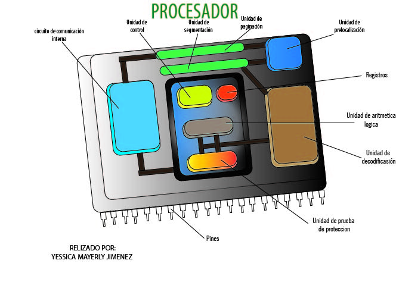

La Unidad Central de Procesamiento (CPU) controla el funcionamiento del computador y lleva a cabo sus funciones de procesamiento de datos.
Esta constituido por:
• Registros visibles para el usuario: Permiten al programador de lenguaje máquina o de ensamblador, minimizar las referencias a memoria principal por medio de la optimización de uso de registros.
• Registros de control: Utilizados por la unidad de control para controlar el funcionamiento del procesador y por programas privilegiados del SO para controlar la ejecución de programas.
• Unidad de Control: Le indica al resto del sistema como llevar a cabo las instrucciones de un programa.
• Unidad Aritmético-Lógica: Recibe los datos sobre los que efectúa operaciones de cálculo y comparaciones. Toma decisiones lógicas y devuelve luego el resultado.

Un registro es una memoria que está ubicada en el procesador y se encuentra en el nivel más alto en la jerarquía de memoria, por lo tanto tiene una alta velocidad pero con poca capacidad para almacenar datos que va desde los 4 bits hasta los 64 bits dependiendo del procesador que se utilice.
Es aquel que puede ser referenciado por medio del lenguaje máquina que ejecuta la CPU.
Son aquellos que pueden guardar tanto datos como direcciones.
• AX, AH, AL (Acumulador): Conserva el resultado temporal después de una operación aritmética o lógica.
• BX, BH, BL (Base): Guardan la dirección base de listas de datos en la memoria.
• CX, CH, CL (Contador): Contiene el conteo para ciertas instrucciones de corrimientos y rotaciones, de iteraciones en el ciclo loop y operaciones repetidas de cadenas.
• DX, DH, DL (Datos): Contiene la parte más significativa de un producto después de una multiplicación; la parte más significativa del dividendo antes de la división.

En algunos casos son de propósito general y pueden ser empleados por cualquier instrucción que lleve a cabo operaciones sobre los datos.

Para que un CPU pueda almacenar y recuperar datos en RAM, debe tener la dirección de la memoria de la información. Esas operaciones que implican RAM usan registros de dirección de memoria. El CPU no realiza aritmética en estos registros; en cambio, los usa para ubicar datos que necesita.

Conocidos como indicadores o flags. Son bits activados por el procesador como resultado de determinadas operaciones.

• Registro SI: El registro índice fuente de 16 bits, es requerido por algunas operaciones con cadenas de caracteres. El SI está asociado con el registro DS.
• Registro DI: El registro índice destino, también es requerido por algunas operaciones con cadenas de caracteres. El DI está asociado con el registro ES.

• CS (Código): Tiene la dirección lógica del segmento en que se encuentra el código de un programa.
• DS (Datos): Tiene la dirección lógica del segmento en que se encuentran los datos estáticos de un programa.
• ES (Extra): Se utiliza en ciertas operaciones del procesador para el manejo de cadenas.
• SS (Pila): Tiene la dirección lógica del segmento en que se encuentran la pila del sistema.
• SP (Apuntador de pila): Contiene el desplazamiento con respecto al segmento de pila del tope de la pila del programa.
• BP (Apuntador de base): Contiene el desplazamiento con respecto al segmento de pila de datos almacenados en la pila de un programa.
• IP (Apuntador de instrucciones): Contiene siempre el desplazamiento con respecto al segmento de código de la localidad de memoria que contiene la siguiente instrucción que va a ejecutar el microprocesador.
Es un registro de 16 bits, de los cuales nueve sirven para indicar el estado actual de la máquina y el resultado del procesamiento. La tabla contiene 16 posiciones (de 0 a 15), que son los 16 bits del registro de banderas, numeradas de derecha a izquierda. La posición 0 la encontraremos a la derecha y la posición 15 a la izquierda.
El ciclo de instrucción es la secuencia de acciones que realiza la Unidad de Control para ejecutar una instrucción del programa almacenado en memoria.
• Fetch: Lee la próxima instrucción a ejecutarse en la memoria.
• Decode: Analiza el código binario de la instrucción para determinar que se debe realizar.
• Read: Se accede a la memoria para traer los operandos.
• Execute: Es la ejecución de la operación por parte de la ALU sobre los operandos.
• Write: Se escribe el resultado en el destino indicado en la instrucción.
Utilizados por la Unidad de Control para controlar el funcionamiento del procesador y por programas privilegiados del SO para controlar la ejecución de programas.
Existen diversos tipos:
• De datos: Guardan valores de datos numéricos como son los caracteres o pequeñas órdenes.
• De datos de memoria (MDR): Se encuentra en el procesador y está conectado al bus de datos.
• De direcciones: Guardan direcciones que son usadas para acceder a la memoria principal o primario, que solemos conocer como ROM o RAM.
• De propósito general (GPRS): Sirven para almacenar direcciones o datos generales.
• De propósito específico (SPRS): Guardan datos del sistema, como puede ser el registro de estado o el instruction pointer.
• De estado: Guardan valores reales cuya función es determinar cúando una instrucción debe ejecutarse o no.

Asimismo, los registros de estado se dividen en:
• De bandera o “flags”: Se encuentran en los procesadores Intel con Arquitectura x86. Hay dos sucesores: EFLAGS (32 bits de ancho) y RFLAGS (64 bits de ancho).
• De coma flotante: Representación en forma de fórmula, de números reales de distintos tamaños que sirven para realizar operaciones aritméticas.
• Constantes: Su cometido es guardar valores de sólo lectura como 0, 1 y pi.

Llamado Ciclo de fetch-and-execute. Es el periodo que tarda el procesador en ejectuar una instrucción de lenguaje máquina.
1. Busca la instrucción en la memoria principal.
2. Decodifica la instrucción.
3. Ejecuta la instrucción.
4. Almacena o guarda resultados.
Técnica que permite implementar el paralelismo a nivel de instrucción en un único procesador.
El número de pasos dependientes varían según la arquitectura de la máquina. La segmentación RISC clásica comprende:
1. Lectura de instrucción.
2. Decodificación de instrucción y lectura de registro.
3. Ejecución
4. Acceso a memoria.
5. Escritura de vuelta en el registro.
El conjunto de instrucciones de una PC debe ser completo en el sentido de que se pueda construir un programa para evaluar una función computable usando una cantidad de memoria razonable y empleando un tiempo moderado.
Los juegos de instrucciones de igual manera, deben ser eficientes: las funciones más necesarias deben poder realizarse usando pocas instrucciones.
El conjunto de instrucciones de una máquina debe ser regular, es decir, debe ser simétrico y octogonal (deben poder combinarse en la medida de lo posible todas las operaciones con todos los tipos de datos y modos de direccionamiento).
Una máquina puede llegar a funcionar con un juego de instrucciones muy limitado, lo cual simplificaría los circuitos de la máquina. Sin embargo, tiene como consecuencia, programas demasiado complejos e ineficientes.
Es necesario encontrar un compromiso entre la simplicidad del hardware y del software. Un mínimo para llegar a ese compromiso se consigue con los tipos de instrucciones siguientes:
• Instrucciones de transferencia de datos
• Instrucciones aritméticas
• Instrucciones lógicas
• Instrucciones de control del flujo del programa
• Instrucciones de E/S
Un modo de direccionamiento especifica la forma de calcular la dirección de memoria efectiva de un operando mediante el uso de la información contenida en registros dentro de una instrucción de la máquina.
1. Implícito. La dirección del operando se conoce implícitamente a través del código de operación.
2. Inmediato: El operando está especificado dentro de la instrucción misma.
3. Directo: La dirección efectiva del operando se encuentra en el campo de dirección de la instrucción.
4. Indirecto: El campo del operando contiene una dirección de memoria que apunta a la dirección efectiva del operando.
5. Relativo: El desplazamiento del campo de dirección se trata como un número en complemento a 2, relativo al contador de programa.
6. Con registro base: El campo de dirección contiene un desplazamiento desde la dirección almacenada en un registro base.
7. Absoluto: El campo del operando contiene la dirección física del operando en memoria.
8. Indexado: El campo de dirección referencia una dirección de memoria principal, y el registro contiene un desplazamiento desde esa dirección.
9. Autoincremento: La dirección del operando está en un registro que se incrementa después de acceder al operando.
10. Autodecremento: Se decrementa un registro en el tamaño del operando para obtener la dirección del siguiente operando.
Está compuesto por la unidad de ejecución (que contiene ocho registros de 32 bits de propósito general y un barrel shifter de 64 bits) y la unidad de instrucciones.
Tiene registros de 32 bits en las siguientes categorías:
• De propósito general
• De segmento
• Indicadores
• De control (nuevos en el 80386)
• De direcciones de sistema
• De depuración (nuevos en el 80386)
• De test (nuevos en el 80386)